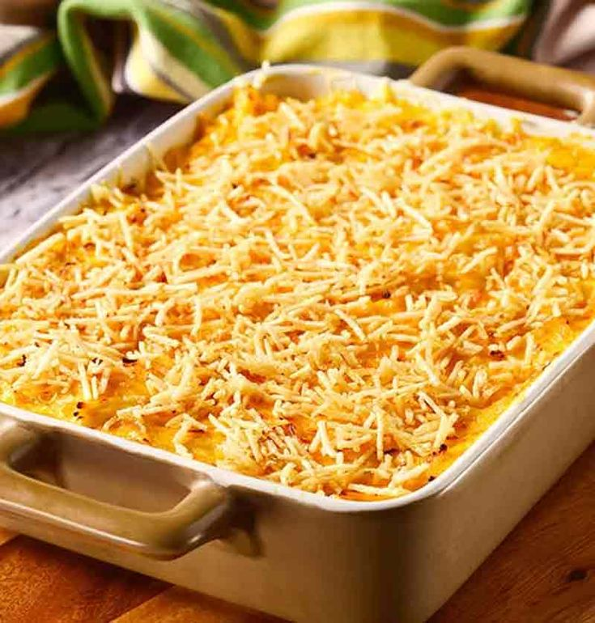

O fricassê de frango é uma daquelas receitas clássicas que fazem sucesso em qualquer mesa. Cremoso, fácil de preparar e cheio de sabor, ele é perfeito para um almoço em família ou para um jantar especial durante a semana.
O creme feito com milho, requeijão e creme de leite deixa o frango desfiado extremamente cremoso, enquanto a camada de muçarela derretida e batata palha por cima traz textura e sabor irresistíveis. Além disso, é uma ótima maneira de aproveitar sobras de frango cozido. Sirva com arroz branco e uma salada verde para uma refeição completa e deliciosa. Experimente esta receita e surpreenda-se com o resultado!
Tempo: 30m
Rendimento: 4 Porções
Dificuldade: Fácil